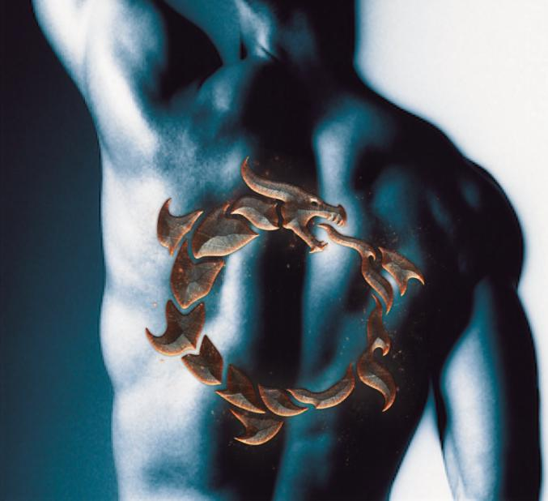

Changed

“Gus….Gus wake up…” It was his father’s voice sounding very worried. Angus awoke to find his father, Uncle, and cousins looking down at him. His father let out a sigh. “I thought we’d lost ye!” He helped Angus sit up. Angus realized where he was. “The hunters!”, he said looking around. “They’re gone, son. No need tae worry. Yer safe.”, said father. “Father...I….” His father interrupted, “Tomorrow, Gus. We can talk aboot it tomorrow. Let’s git ye home.”
The next morning when Angus awoke, Alick was sitting at the end of his bed. “Mornin’”, yawned Angus sleepily. Alick look at him concerned. “I’m sorry I dinnae keep yer secret, Angus. I really meant to. Now we’re both in trouble.” Angus gave Alick a grin. “Better to be in trouble than dead. Ye did the right thing, Alick.” Alick looked visibly relieved. “Go on down for breakfast. I’ll be there in a bit.” Alick got up and left the room. Angus sat up on the side of his bed and rubbed his eyes. He tried to remember what happened prior to fainting, but it was a blur. The hunters had a hold of him then just let go. Why did they let go? There was something….something about the pit. He couldn’t remember. He stood up and pulled off his nightshirt. On his way to grab his day clothes he caught a glimpse of himself in the mirror. “Whit the…….” Angus backed up and stood in front of the mirror staring at his reflection. “What in the devil happened tae me?” His slight, coltish body had transformed overnight. He was fit...muscular. His arms, shoulders, chest, abdominal muscles were built. Even his face looked older; his jaw chiseled and his cheekbones more defined. Angus slowly spun around looking at himself from all sides, front to back. That is when he noticed the mark that covered his entire backside. It was a picture of something….an Ouroboros; a dragon in the shape of circle, eating its own tail. He had seen these before. They symbolized “Life out of Death”... an eternal cycle of renewal. But how did it end up on his back? How did any of this happen? Now he really wished he could remember the night before. Angus dressed and headed downstairs for breakfast.
When he got to the dining hall, Uncle Robert and his three sons were there. George was the eldest of the boys. He was 25 and towered over the entire clan. He was 6’ 5” tall with a very broad chest, long copper hair tied back and a full, thick beard. Bearnard who everyone called “Bean” was Uncle Robert’s second born. Bean was 21 years and looked like most of the men in the family; stout and muscular with a thick copper top and hazel eyes. The youngest of the sons was Duncan. Duncan was 18. He was more slender than the others but just as strong. He was fierce yet thoughtful. He had wavy raven colored hair and eyes the color of the sea. Duncan was a mirror image of his mother. His mother was Romanian and had migrated to Scotland with her family many years before. It was rumored that Aunt Diona dabbled in the dark pagan arts and that Duncan shared her affinity for magic. If Uncle Robert ever heard talk of this, he would be sure to tell the gossiper where they could stick their rumors. Everyone looked up when Angus entered. “How’re ye feelin’, Gus?”, asked father. Angus paused to think about how he felt. He was so shocked to discover the change in how he looked that he didn’t notice how great he felt. He had this incredible amount of energy pulsing through his body and felt like he could lift an entire castle. “I feel good. Must have slept like a rock.”, Angus replied. He took his seat at the table. “Guid tae see ye, Uncle Robert...George...Bean...Duncan”, Angus said nodding at each in turn. “Gus, we have gathered the clan to talk aboot whit happened last night. Ye want tae tell us what ye saw?”, asked his father. “Ay...but some of the night cannae remember. I’ll tell ye what I do remember.” “Start by tellin’ us why you an Alick were out there to begin with.”, said father.
So Angus began his story, about how he was picking berries and discovered the trap. He thought the trap had been set by the Ainslies and realized an animal was inside the trap. He went to help the animal only to discover the trap contained a real live dragon. His father interrupted, “A dragon? Angus, ye dinnae expect us tae believe ye found a dragon…” Alick spoke up. “But it’s true! A saw the beast mayself!” Uncle William motioned for Alick to calm himself. “Alright. Let’s say ye did find a dragon. Why dinnae ye tell us aboot it?”, asked Uncle WIlliam. Angus dropped his head, feeling that familiar shame he felt when he knew he had disappointed the family. “A wanted tae help the dragon”, mumbled Angus quietly. “Speak up!”, demanded Uncle William. “Ye wanted tae what?” Angus straightened up, looked directly at Uncle William, and said clearly, “A wanted tae HELP the dragon, and A knew if A told the rest of ye, that ye would kill it.” Uncle William stood up and leaned over the table toward Angus, his face red with anger. “Well, of course we wuild hae killed it! It’s a dragon! It’s what ye do with dragons unless ye want them tae eat all yer livestock and burn yer houses! Did ye know yer great grandfather was one of the greatest dragon slayers that ever lived! If he cuild hear ye now…..I….” Angus’ father interrupted, “Now calm yerself, Will! A minute ago ye dinnae even believe there WAS a dragon!” Uncle William slowly sat down but kept his icy stare on Angus. “Now Angus….son….ye are SURE this was a dragon?” “Ay, father. I’m sure.”, Angus replied. “Continue with yer story”, encouraged his father. Angus nervously glanced at his Uncle and then quickly back to his father. “Right. So, I thought the best way tae rescue a dragon without gettin’ roasted is tae put the beast tae sleep.” Angus went on to explain what happened.. at least what he could remember... in detail: crushed poppy stuffed into a lamb’s corpse...getting caught by Alick...inviting Alick along...running into the dragon hunters…”and next thing I knew, I was leukin’ up and all of ye were around me.” Alick excitedly spoke up, “Angus save my life! They were gonna feed me to the dragon! Ye should have seen him swing the shovel at that hunter!” Uncle William looked at Alick and his expression relaxed a bit. “A am glad of that...however, Alick wuild na needed savin’ if ye had told us from the beginning.” Angus dropped his gaze again. “I understand. I’m sorry for the trouble I made.” “Ye dinnae remember whit happened between the time the hunters grabbed ye and yer father woke ye?” inquired a voice from across the table. It was Duncan. He was staring at Angus quizzically. “No. I guess I fainted.”, Angus replied. “But the hunters told ye that ye were comin’ with them...so why did they leave ye when ye fainted?” Duncan asked. Angus just shrugged his shoulders. The conversation around the table then turned to plans to hunt down the hunters. As Angus listened, he could feel Duncan’s gaze on him, like he was trying to figure something out. “Does Duncan know somethin’ about the changes in me?”, Angus wondered. “Na. Mibbeh he’s just wonderin’ how I could be such a dolt an not remember whit happened tae me last night.”